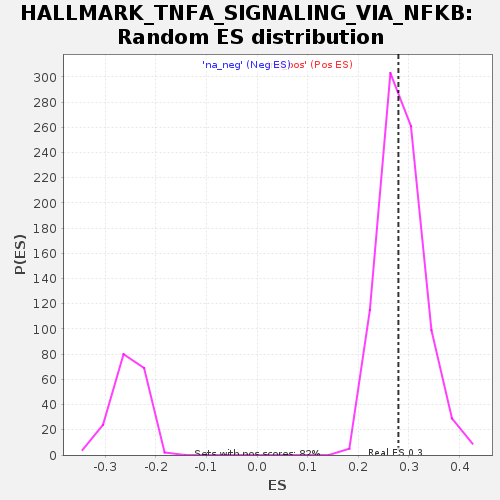

| | | Dataset | GSE18198_cov_collapsed |
| Phenotype | NoPhenotypeAvailable |
| Upregulated in class | na_pos |
| GeneSet | HALLMARK_TNFA_SIGNALING_VIA_NFKB |
| Enrichment Score (ES) | 0.27912048 |
| Normalized Enrichment Score (NES) | 0.97807914 |
| Nominal p-value | 0.5225335 |
| FDR q-value | 0.8048279 |
| FWER p-Value | 1.0 |
Table: GSEA Results Summary
 Fig 1: Enrichment plot: HALLMARK_TNFA_SIGNALING_VIA_NFKB
Fig 1: Enrichment plot: HALLMARK_TNFA_SIGNALING_VIA_NFKB
Profile of the Running ES Score & Positions of GeneSet Members on the Rank Ordered List
| SYMBOL | TITLE | RANK IN GENE LIST | RANK METRIC SCORE | RUNNING ES | CORE ENRICHMENT | | 1 | JUN | NA | 0 | 5.975 | 0.0760 | Yes |
| 2 | TNFAIP3 | NA | 4 | 2.814 | 0.1117 | Yes |
| 3 | HBEGF | NA | 146 | 1.550 | 0.1246 | Yes |
| 4 | TANK | NA | 211 | 1.373 | 0.1390 | Yes |
| 5 | MARCKS | NA | 213 | 1.372 | 0.1564 | Yes |
| 6 | EGR1 | NA | 315 | 1.228 | 0.1672 | Yes |
| 7 | NR4A3 | NA | 373 | 1.170 | 0.1793 | Yes |
| 8 | BIRC3 | NA | 485 | 1.058 | 0.1875 | Yes |
| 9 | SOCS3 | NA | 572 | 1.002 | 0.1961 | Yes |
| 10 | BTG2 | NA | 593 | 0.990 | 0.2077 | Yes |
| 11 | DNAJB4 | NA | 848 | 0.853 | 0.2063 | Yes |
| 12 | CXCL2 | NA | 1104 | 0.765 | 0.2037 | Yes |
| 13 | DDX58 | NA | 1182 | 0.739 | 0.2094 | Yes |
| 14 | GADD45B | NA | 1366 | 0.686 | 0.2094 | Yes |
| 15 | IL1A | NA | 1597 | 0.633 | 0.2063 | Yes |
| 16 | PLEK | NA | 1710 | 0.609 | 0.2087 | Yes |
| 17 | KYNU | NA | 1752 | 0.598 | 0.2143 | Yes |
| 18 | B4GALT1 | NA | 1921 | 0.570 | 0.2135 | Yes |
| 19 | BMP2 | NA | 1940 | 0.567 | 0.2198 | Yes |
| 20 | REL | NA | 1981 | 0.559 | 0.2250 | Yes |
| 21 | SERPINB2 | NA | 1990 | 0.557 | 0.2317 | Yes |
| 22 | NFKBIA | NA | 2054 | 0.549 | 0.2356 | Yes |
| 23 | NFKB2 | NA | 2284 | 0.520 | 0.2312 | Yes |
| 24 | TNFAIP6 | NA | 2289 | 0.520 | 0.2376 | Yes |
| 25 | PLAUR | NA | 2318 | 0.515 | 0.2429 | Yes |
| 26 | CD69 | NA | 2493 | 0.492 | 0.2407 | Yes |
| 27 | GEM | NA | 2662 | 0.470 | 0.2386 | Yes |
| 28 | ID2 | NA | 2668 | 0.469 | 0.2443 | Yes |
| 29 | CD44 | NA | 2698 | 0.466 | 0.2489 | Yes |
| 30 | CFLAR | NA | 2776 | 0.458 | 0.2510 | Yes |
| 31 | ZBTB10 | NA | 2952 | 0.441 | 0.2482 | Yes |
| 32 | NFAT5 | NA | 3077 | 0.429 | 0.2477 | Yes |
| 33 | KLF4 | NA | 3106 | 0.425 | 0.2517 | Yes |
| 34 | BTG3 | NA | 3109 | 0.424 | 0.2570 | Yes |
| 35 | ACKR3 | NA | 3126 | 0.422 | 0.2616 | Yes |
| 36 | CCL4 | NA | 3232 | 0.412 | 0.2618 | Yes |
| 37 | RHOB | NA | 3445 | 0.390 | 0.2565 | Yes |
| 38 | TNIP1 | NA | 3660 | 0.371 | 0.2509 | Yes |
| 39 | MAP2K3 | NA | 3796 | 0.362 | 0.2490 | Yes |
| 40 | SERPINE1 | NA | 3894 | 0.353 | 0.2489 | Yes |
| 41 | CCNL1 | NA | 3940 | 0.348 | 0.2511 | Yes |
| 42 | FOS | NA | 3969 | 0.345 | 0.2542 | Yes |
| 43 | BCL3 | NA | 3990 | 0.343 | 0.2576 | Yes |
| 44 | KLF9 | NA | 3993 | 0.343 | 0.2618 | Yes |
| 45 | EDN1 | NA | 4075 | 0.336 | 0.2622 | Yes |
| 46 | PHLDA1 | NA | 4120 | 0.333 | 0.2643 | Yes |
| 47 | CCL20 | NA | 4123 | 0.333 | 0.2685 | Yes |
| 48 | TSC22D1 | NA | 4191 | 0.328 | 0.2694 | Yes |
| 49 | IL23A | NA | 4197 | 0.328 | 0.2733 | Yes |
| 50 | BCL6 | NA | 4230 | 0.324 | 0.2759 | Yes |
| 51 | BIRC2 | NA | 4446 | 0.308 | 0.2695 | Yes |
| 52 | MAP3K8 | NA | 4451 | 0.308 | 0.2732 | Yes |
| 53 | IER3 | NA | 4474 | 0.307 | 0.2761 | Yes |
| 54 | JAG1 | NA | 4492 | 0.305 | 0.2791 | Yes |
| 55 | RCAN1 | NA | 4674 | 0.292 | 0.2741 | No |
| 56 | CCND1 | NA | 4927 | 0.275 | 0.2655 | No |
| 57 | FOSL2 | NA | 4930 | 0.274 | 0.2689 | No |
| 58 | AREG | NA | 4957 | 0.272 | 0.2711 | No |
| 59 | IER5 | NA | 5168 | 0.261 | 0.2643 | No |
| 60 | SMAD3 | NA | 5252 | 0.255 | 0.2635 | No |
| 61 | IL6ST | NA | 5398 | 0.249 | 0.2597 | No |
| 62 | IL1B | NA | 5513 | 0.242 | 0.2573 | No |
| 63 | TRIB1 | NA | 5756 | 0.230 | 0.2485 | No |
| 64 | SQSTM1 | NA | 5944 | 0.219 | 0.2423 | No |
| 65 | PDE4B | NA | 5949 | 0.219 | 0.2449 | No |
| 66 | RIPK2 | NA | 6058 | 0.214 | 0.2424 | No |
| 67 | LDLR | NA | 6181 | 0.208 | 0.2392 | No |
| 68 | IFIT2 | NA | 6373 | 0.198 | 0.2325 | No |
| 69 | TAP1 | NA | 6390 | 0.197 | 0.2343 | No |
| 70 | TNC | NA | 6417 | 0.196 | 0.2355 | No |
| 71 | OLR1 | NA | 6476 | 0.193 | 0.2352 | No |
| 72 | ABCA1 | NA | 6777 | 0.181 | 0.2230 | No |
| 73 | CXCL6 | NA | 6854 | 0.177 | 0.2216 | No |
| 74 | IFIH1 | NA | 7235 | 0.163 | 0.2053 | No |
| 75 | EGR2 | NA | 7350 | 0.159 | 0.2019 | No |
| 76 | MXD1 | NA | 7368 | 0.158 | 0.2031 | No |
| 77 | FOSL1 | NA | 7407 | 0.156 | 0.2032 | No |
| 78 | INHBA | NA | 7444 | 0.155 | 0.2034 | No |
| 79 | EIF1 | NA | 7475 | 0.153 | 0.2040 | No |
| 80 | CCL5 | NA | 7494 | 0.153 | 0.2050 | No |
| 81 | CSF1 | NA | 7567 | 0.151 | 0.2035 | No |
| 82 | PLAU | NA | 7586 | 0.150 | 0.2045 | No |
| 83 | CXCL3 | NA | 7639 | 0.148 | 0.2039 | No |
| 84 | ATF3 | NA | 7833 | 0.141 | 0.1964 | No |
| 85 | CXCL10 | NA | 7844 | 0.140 | 0.1977 | No |
| 86 | CD83 | NA | 7851 | 0.140 | 0.1992 | No |
| 87 | IL6 | NA | 7852 | 0.140 | 0.2010 | No |
| 88 | PLK2 | NA | 7905 | 0.138 | 0.2002 | No |
| 89 | TNFRSF9 | NA | 7915 | 0.137 | 0.2015 | No |
| 90 | PER1 | NA | 8068 | 0.132 | 0.1959 | No |
| 91 | NAMPT | NA | 8388 | 0.120 | 0.1820 | No |
| 92 | SGK1 | NA | 8816 | 0.107 | 0.1628 | No |
| 93 | CEBPD | NA | 9097 | 0.099 | 0.1506 | No |
| 94 | KLF2 | NA | 9226 | 0.096 | 0.1456 | No |
| 95 | TRAF1 | NA | 9366 | 0.092 | 0.1401 | No |
| 96 | DUSP1 | NA | 9381 | 0.091 | 0.1406 | No |
| 97 | SDC4 | NA | 9469 | 0.088 | 0.1375 | No |
| 98 | BTG1 | NA | 9532 | 0.087 | 0.1356 | No |
| 99 | CCL2 | NA | 9656 | 0.083 | 0.1307 | No |
| 100 | TIPARP | NA | 10326 | 0.064 | 0.0993 | No |
| 101 | TGIF1 | NA | 10341 | 0.063 | 0.0994 | No |
| 102 | CXCL11 | NA | 10353 | 0.063 | 0.0997 | No |
| 103 | IL12B | NA | 10489 | 0.059 | 0.0940 | No |
| 104 | MSC | NA | 10754 | 0.052 | 0.0819 | No |
| 105 | KLF6 | NA | 10786 | 0.052 | 0.0811 | No |
| 106 | PDLIM5 | NA | 10792 | 0.052 | 0.0815 | No |
| 107 | KDM6B | NA | 11019 | 0.045 | 0.0712 | No |
| 108 | CD80 | NA | 11046 | 0.045 | 0.0705 | No |
| 109 | PLPP3 | NA | 11078 | 0.044 | 0.0695 | No |
| 110 | NINJ1 | NA | 11098 | 0.043 | 0.0692 | No |
| 111 | PTPRE | NA | 11297 | 0.039 | 0.0601 | No |
| 112 | ICAM1 | NA | 11370 | 0.037 | 0.0571 | No |
| 113 | NR4A1 | NA | 11437 | 0.035 | 0.0544 | No |
| 114 | SERPINB8 | NA | 11455 | 0.035 | 0.0540 | No |
| 115 | EHD1 | NA | 11489 | 0.034 | 0.0529 | No |
| 116 | MCL1 | NA | 11706 | 0.029 | 0.0428 | No |
| 117 | TNFAIP8 | NA | 11904 | 0.025 | 0.0337 | No |
| 118 | IRS2 | NA | 12005 | 0.023 | 0.0291 | No |
| 119 | TNFSF9 | NA | 12029 | 0.023 | 0.0283 | No |
| 120 | SOD2 | NA | 12187 | 0.020 | 0.0210 | No |
| 121 | RNF19B | NA | 12420 | 0.016 | 0.0100 | No |
| 122 | ZC3H12A | NA | 12507 | 0.014 | 0.0061 | No |
| 123 | PTGS2 | NA | 12640 | 0.011 | -0.0002 | No |
| 124 | CSF2 | NA | 12870 | 0.006 | -0.0111 | No |
| 125 | FOSB | NA | 12898 | 0.005 | -0.0124 | No |
| 126 | SNN | NA | 13071 | 0.002 | -0.0206 | No |
| 127 | LITAF | NA | 13083 | 0.002 | -0.0211 | No |
| 128 | CLCF1 | NA | 13123 | 0.001 | -0.0230 | No |
| 129 | ZFP36 | NA | 13271 | -0.001 | -0.0301 | No |
| 130 | SPHK1 | NA | 13297 | -0.002 | -0.0312 | No |
| 131 | PTX3 | NA | 13361 | -0.003 | -0.0342 | No |
| 132 | SLC2A6 | NA | 13363 | -0.003 | -0.0343 | No |
| 133 | IL18 | NA | 13405 | -0.004 | -0.0362 | No |
| 134 | NFKBIE | NA | 13911 | -0.015 | -0.0603 | No |
| 135 | MAFF | NA | 13925 | -0.015 | -0.0608 | No |
| 136 | PANX1 | NA | 13983 | -0.017 | -0.0633 | No |
| 137 | CCN1 | NA | 14097 | -0.019 | -0.0685 | No |
| 138 | ICOSLG | NA | 14167 | -0.021 | -0.0716 | No |
| 139 | PMEPA1 | NA | 14407 | -0.025 | -0.0828 | No |
| 140 | SAT1 | NA | 14595 | -0.029 | -0.0914 | No |
| 141 | GFPT2 | NA | 14673 | -0.031 | -0.0947 | No |
| 142 | TNF | NA | 14712 | -0.032 | -0.0962 | No |
| 143 | LIF | NA | 15002 | -0.041 | -0.1096 | No |
| 144 | IFNGR2 | NA | 15011 | -0.041 | -0.1094 | No |
| 145 | PHLDA2 | NA | 15244 | -0.049 | -0.1200 | No |
| 146 | NR4A2 | NA | 15524 | -0.059 | -0.1327 | No |
| 147 | PPP1R15A | NA | 15586 | -0.063 | -0.1348 | No |
| 148 | EGR3 | NA | 15673 | -0.066 | -0.1381 | No |
| 149 | G0S2 | NA | 15717 | -0.068 | -0.1393 | No |
| 150 | GADD45A | NA | 15732 | -0.069 | -0.1391 | No |
| 151 | DRAM1 | NA | 16094 | -0.085 | -0.1554 | No |
| 152 | TUBB2A | NA | 16179 | -0.089 | -0.1584 | No |
| 153 | CCRL2 | NA | 16329 | -0.096 | -0.1643 | No |
| 154 | PTGER4 | NA | 16664 | -0.113 | -0.1790 | No |
| 155 | TNFAIP2 | NA | 16796 | -0.119 | -0.1838 | No |
| 156 | NFE2L2 | NA | 16906 | -0.126 | -0.1874 | No |
| 157 | RELB | NA | 16914 | -0.126 | -0.1861 | No |
| 158 | TRIP10 | NA | 17090 | -0.138 | -0.1928 | No |
| 159 | GPR183 | NA | 17143 | -0.141 | -0.1935 | No |
| 160 | LAMB3 | NA | 17223 | -0.149 | -0.1954 | No |
| 161 | TNIP2 | NA | 17277 | -0.153 | -0.1961 | No |
| 162 | ATP2B1 | NA | 17312 | -0.156 | -0.1957 | No |
| 163 | HES1 | NA | 17674 | -0.183 | -0.2108 | No |
| 164 | FJX1 | NA | 17863 | -0.203 | -0.2173 | No |
| 165 | DUSP2 | NA | 17976 | -0.212 | -0.2200 | No |
| 166 | B4GALT5 | NA | 18072 | -0.223 | -0.2217 | No |
| 167 | GCH1 | NA | 18073 | -0.223 | -0.2189 | No |
| 168 | DUSP4 | NA | 18135 | -0.230 | -0.2189 | No |
| 169 | CXCL1 | NA | 18146 | -0.230 | -0.2164 | No |
| 170 | FUT4 | NA | 18555 | -0.280 | -0.2325 | No |
| 171 | CDKN1A | NA | 18570 | -0.283 | -0.2296 | No |
| 172 | RELA | NA | 18578 | -0.284 | -0.2263 | No |
| 173 | F2RL1 | NA | 18584 | -0.286 | -0.2229 | No |
| 174 | BCL2A1 | NA | 18618 | -0.292 | -0.2208 | No |
| 175 | ETS2 | NA | 18837 | -0.327 | -0.2272 | No |
| 176 | CEBPB | NA | 18839 | -0.327 | -0.2230 | No |
| 177 | DENND5A | NA | 19184 | -0.393 | -0.2346 | No |
| 178 | PNRC1 | NA | 19271 | -0.413 | -0.2335 | No |
| 179 | F3 | NA | 19356 | -0.437 | -0.2320 | No |
| 180 | TLR2 | NA | 19396 | -0.445 | -0.2282 | No |
| 181 | SPSB1 | NA | 19439 | -0.456 | -0.2244 | No |
| 182 | SLC16A6 | NA | 19474 | -0.467 | -0.2201 | No |
| 183 | JUNB | NA | 19751 | -0.555 | -0.2264 | No |
| 184 | SIK1 | NA | 19785 | -0.572 | -0.2207 | No |
| 185 | NFIL3 | NA | 19861 | -0.597 | -0.2167 | No |
| 186 | IL15RA | NA | 19864 | -0.598 | -0.2092 | No |
| 187 | YRDC | NA | 19962 | -0.639 | -0.2057 | No |
| 188 | DUSP5 | NA | 19980 | -0.647 | -0.1983 | No |
| 189 | IL7R | NA | 20138 | -0.731 | -0.1966 | No |
| 190 | IRF1 | NA | 20220 | -0.790 | -0.1904 | No |
| 191 | EFNA1 | NA | 20390 | -0.936 | -0.1867 | No |
| 192 | VEGFA | NA | 20543 | -1.094 | -0.1801 | No |
| 193 | NFKB1 | NA | 20585 | -1.152 | -0.1674 | No |
| 194 | KLF10 | NA | 20613 | -1.186 | -0.1536 | No |
| 195 | SLC2A3 | NA | 20700 | -1.332 | -0.1408 | No |
| 196 | BHLHE40 | NA | 20817 | -1.645 | -0.1254 | No |
| 197 | IER2 | NA | 20830 | -1.713 | -0.1042 | No |
| 198 | STAT5A | NA | 20863 | -2.010 | -0.0802 | No |
| 199 | PFKFB3 | NA | 20927 | -2.736 | -0.0484 | No |
| 200 | MYC | NA | 20944 | -3.875 | 0.0001 | No |
Table: GSEA details [plain text format]

Fig 2: HALLMARK_TNFA_SIGNALING_VIA_NFKB: Random ES distribution
Gene set null distribution of ES for HALLMARK_TNFA_SIGNALING_VIA_NFKB